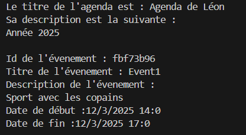
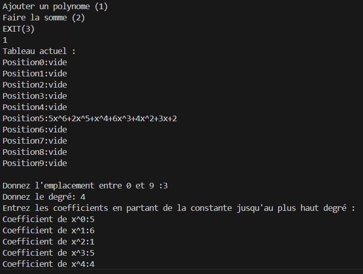
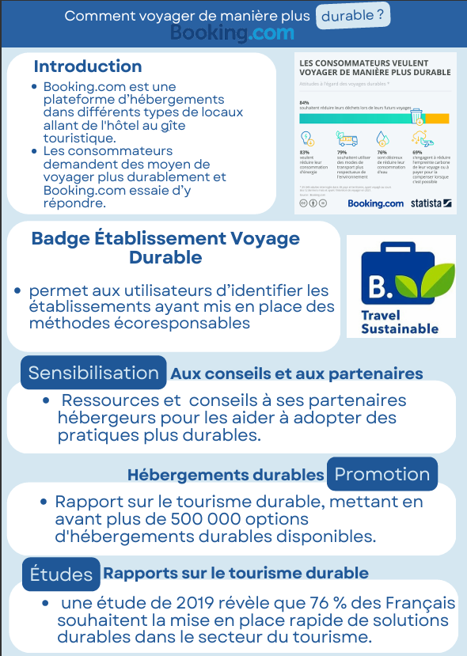

Lors d'une séance d'apprentissage et d'évaluation, on nous a donné comme sujet de créer un agenda numérique fonctionnel qui suivait certaines caractéristiques précises.
Cet agenda devait permettre de gérer efficacement des événements avec plusieurs fonctionnalités essentielles telles que :
J'ai développé cette application en utilisant le langage C++, ce qui m'a permis d'approfondir mes connaissances en programmation orientée objet et en gestion de données.

En début de deuxième semestre, nous avons réalisé une calculatrice spécialisée dans la manipulation de polynômes mathématiques.
Cette application devait permettre de gérer et calculer des expressions polynomiales avec plusieurs fonctionnalités :
Ce projet m'a permis d'approfondir mes compétences en C++ tout en appliquant des concepts mathématiques avancés dans le domaine de la programmation.


Un poster informatif qui explique comment voyager de manière plus durable. Il présente des recommandations et des ressources pour encourager des pratiques écologiques dans le secteur du tourisme. Il met en avant le badge Voyage Durable de Booking.com et propose des solutions pour une sensibilisation accrue des voyageurs et des hébergeurs.
Design graphiqueUn flyer promotionnel pour le BUT Informatique de l'IUT d'Arles. Il contient des informations pratiques sur la formation, les débouchés professionnels, ainsi que les spécificités du parcours A. Le flyer est conçu pour être clair, attractif et informatif, en intégrant des éléments visuels tels que des icônes, un QR code et des sections bien organisées.
Mise en page